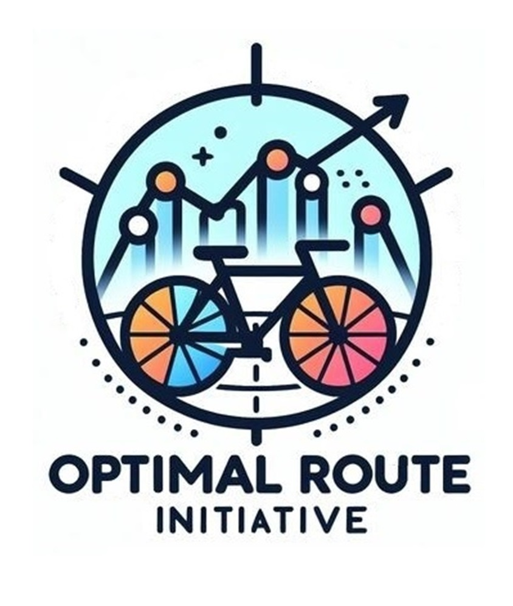

Data Analysis is like sewing – a craft I adore. It begins with a concept, gathering the right fabrics,
sketching out the design, and then delicately stitching it all together - following the golden thread.
Through skill and precision, a stunning new creation emerges. This process demands
time, expertise, and meticulous attention to detail – this is how I approach my work.
I provided 2Market with data-driven insights by exploring customer demographics, product preferences,
and marketing channel performance. This analysis, conducted using advanced Excel, SQL, and Tableau,
revealed actionable insights for re-engaging inactive customer segments and improving customer retention strategies.
Skills:
- Data Analysis: Advanced Excel (EDA, Descriptive Statistics), SQL (PostgreSQL).
- Visualisation: Tableau Dashboards, Storytelling.
- Business Intelligence: Consumer Insights, Strategic Decision-Making.
I analysed NHS service utilisation data to uncover patterns in missed appointments,
helping to inform resource allocation
and operational strategies. Using Python for in-depth diagnostic analysis,
this project generated insights that support NHS efforts to optimise capacity and
reduce appointment-related costs
Skills:
- Data Analysis: Pandas, NumPy, Diagnostic Analysis. Data Wrangling and Manipulation.
- Visualisation: Matplotlib, Seaborn, Power Point.
- Data Engineering: APIs, Web Scraping.
I enhanced Turtle Games’ customer engagement strategy through predictive analytics,
developing models that segment customers, predict loyalty, and personalise product recommendations.
This project, conducted using Python and R, generated actionable insights for targeted marketing
and retention strategies, driving measurable business impact.
Skills:
- Predictive Modelling: Logistic Regression, Decision Trees (CART), k-means Clustering, SVM.
- Natural Language Processing (NLP): Sentiment Analysis. WordCloud. Machine Learning. Text Classification.
- Programming: Python, R.

In partnership with ThoughtWorks, I led a team to develop data-driven strategies aimed at boosting cycling engagement in London by 80%,
aligned with the Mayor’s vision for a more cycle-friendly city.
By examining the impact of infrastructure, safety measures, and bike-sharing programmes,
we pinpointed high-need boroughs and identified key demographics, such as women and outer London residents,
who would benefit from targeted support. We also drew on insights from New York City’s successful cycling initiatives,
offering TfL actionable recommendations to make cycling safer, more accessible, and a central part of sustainable urban mobility in London.
Skills:
- Project Management: Team Leadership, Research Design, Risk Management.
- Stakeholder Engagement: Communication, Targeted Recommendations, Negotiation, Mediation, and Conflict Resolution.
- Data Analysis: Data Collection, Visualisation, Decision Trees, k-means Clustering for Segmentation, Predictive Modelling, Data Wrangling, Statistical Analysis.